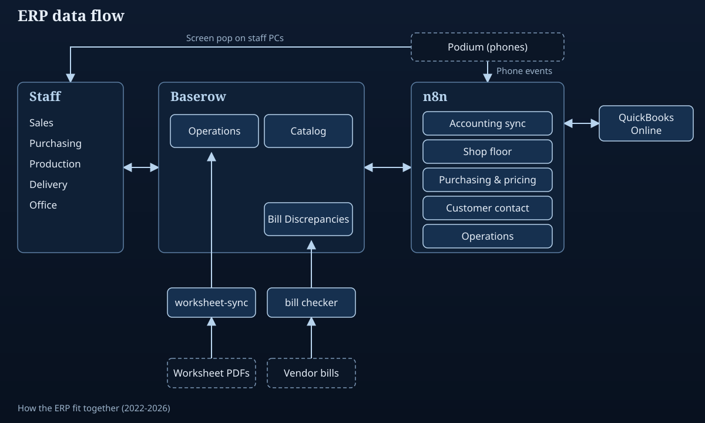
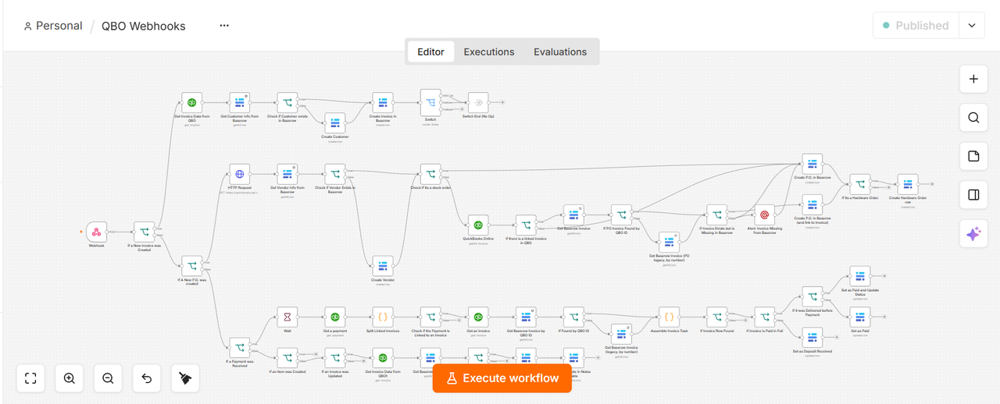
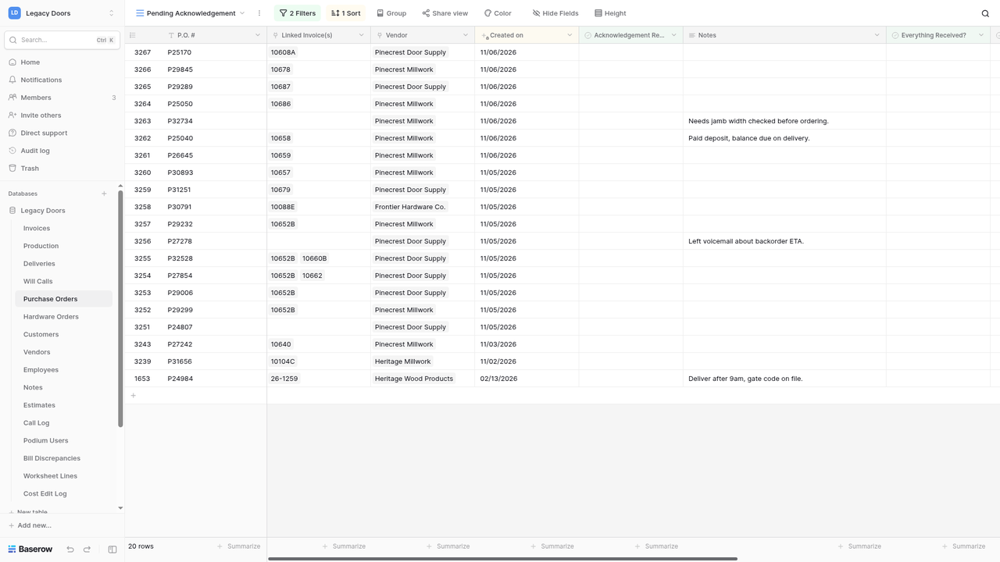
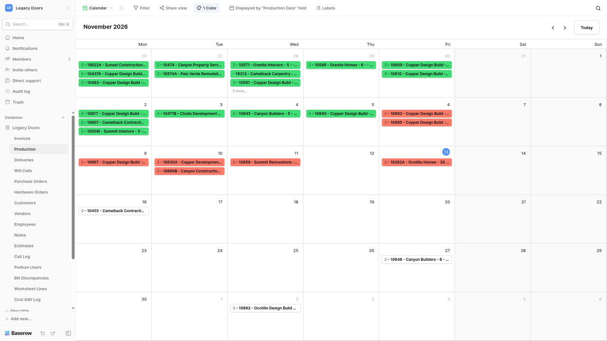

Case study: building the ERP for an 11-person door and trim distributor
Spencer Brimley · Baserow + n8n + Python + QuickBooks Online · Aug 2022 – Oct 2026
At a glance
- Company: Aztec Doors & Trim (Legacy Doors & Trim since June 2026), Mesa AZ. Interior and exterior doors, mouldings and hardware.
- My role: General Manager (2022–2026; I now do commercial sales for the company), and the only person building the system. I did the discovery, requirements, data model, configuration, training, go-live and support.
- Stack: Baserow (open-source no-code database) for the data and screens, n8n for 29 automations, Python for SKU matching and accounts-payable checks, QuickBooks Online as the accounting system. It was self-hosted on a Linux server I ran (rootless Podman containers behind a Caddy reverse proxy).
- Scale: 31 tables in two databases, 32 table-to-table links, 64 saved views. About 3,100 invoices, 3,100 purchase orders, 800 customers, 1,400 logged calls, and a catalog of about 900 items with 1,428 vendor part numbers cross-referenced.
- Adoption: every employee used it; three were daily power users.
- Results: an estimated 10+ staff hours saved a week, measured by timing the manual steps each automation replaced. From May 2025 to November 2026 its n8n workflows handled about 46,000 business events (QuickBooks changes, order and production updates, incoming calls), plus background checks every five minutes.
- Status: the new owner went back to paper in 2026, which was the owner's call. The system is still running, but no one has used it since early November 2026.
The problem
The business ran on paper and QuickBooks. QuickBooks held the money, but nothing tracked the work between a quote and a delivery, so three things kept going wrong:
- Backorders weren't passed on to customers.
- Items never got ordered.
- Customers weren't told when their orders were ready.
The catalog had no SKUs either. The same door was written a dozen ways ("2-6 6-8 2-Panel Monroe HC"), so prices, reorders and vendor matching all depended on someone's memory.
How I built it
- I started small. The first version (August 2022) was a task board on Vikunja, an open-source task manager, to track orders that used to live on paper. At that stage it was mostly a CRM and project tracker. It ran on servers I set up in the office: three old office PCs rebuilt as Debian servers in a Docker Swarm with GlusterFS shared storage, also running PostgreSQL, Paperless-ngx for documents, Seafile for file sync, Uptime Kuma for monitoring and changedetection.io to watch competitor prices. Once the process was clear I rebuilt it as a proper database on Baserow. Baserow did not run well on Swarm, the office internet was slow and the owner often worked away from the office, so I moved the system to a cloud server and shut the Swarm down by April 2024.
- Discovery and requirements. I mapped the work before building anything. I followed an order from estimate to invoice, purchase order, receiving, production, delivery or will-call, and payment, and noted who touched it at each step.
- Data model and configuration. I designed the data model around that flow, in two databases: Operations (17 tables: Estimates, Worksheet Lines, Invoices, Purchase Orders, Hardware Orders, Production, Deliveries, Will Calls, Installs, Customers, Vendors, Notes, Call Log, Bill Discrepancies, Cost Edit Log, and two support tables) and Catalog (14 tables: Doors, Door Styles, Door Types, Mouldings, Parts, Services, Vendors, Vendor Item Codes, and an inventory module).
- SKUs and data migration. I gave the catalog SKUs. Every item got one, and each vendor's own part numbers map to it (1,428 cross-references). I wrote a Python resolver that reads a shop-floor description and returns the SKU, and flags anything ambiguous for a person to review instead of guessing.
- QuickBooks stayed the book of record. I didn't replace accounting. Baserow ran operations, and n8n kept the two in sync through QuickBooks webhooks and API calls, so staff never typed the same thing into both. There was no automation until May 2025, when I added n8n.
- Screens built around each person's job. Each role had its own views (61 grids, 2 calendars, 1 kanban board): the shop saw production, the driver saw deliveries, the office saw what still needed ordering.


The automation layer (29 n8n workflows)
| Area | Workflows | What they do |
|---|---|---|
| Accounting sync | 8 | QuickBooks webhooks, customer sync into Baserow, price sync, routing estimate worksheets into QuickBooks estimates and invoices, review and total checks |
| Shop floor | 8 | Create production and delivery lines from invoices, batch status updates, a weekly production calendar, will-call and invoice status updates |
| Purchasing & pricing | 6 | PO updates, "no acknowledgement" and "not ordered" alerts, bill-intake alerts, price lookup and cost edits (with an audit log) |
| Customer contact | 5 | Pop up the caller's account on screen when the phone rang, phone events from Podium, alerts for estimates missing a customer, quick notes |
| Operations | 2 | Heartbeats for scheduled jobs, plus an MCP endpoint that let an AI assistant query the ERP |
Two Python components sat beside n8n: accounts payable (read vendor bills as PDFs, matched each line to our PO, recorded price and quantity differences in a Bill Discrepancies table for review, and entered the bills that reconciled into QuickBooks Online) and the SKU resolver (SKUs step above).





Integrations and endpoints
Beyond the n8n workflows, four pieces connected the ERP to the rest of the office.
- Screen pop on staff PCs. When someone answered a call on the office phone system, the caller's customer page opened by itself on that person's PC. The phone system sent an event to n8n, n8n looked the number up in Baserow and worked out who had answered, and a message went to a notification channel that belonged to that one user. A small PowerShell listener on each staff PC watched its own channel and opened the page in the default browser. It popped for the person who answered and nowhere else. It never popped for missed calls, voicemails, outbound calls, numbers not in the CRM, or anything older than 10 minutes.
- Worksheet sync. Estimators wrote a production worksheet for every job and printed it to a PDF whose name starts with the job number. A small Python program on the purchasing PC looked at that folder every five minutes, using Windows Task Scheduler. It attached each PDF to the matching invoice, put sheets with no invoice yet on a waiting row in Estimates, parsed the workbooks into line items with the SKUs it could work out, and refreshed the totals on open estimates. It needed one exact job-number match before it attached a file, and it stopped and said so when a number matched two invoices. It never touched QuickBooks. n8n did that work and waited for a person where a decision was needed. After each run it sent a heartbeat to n8n.
- n8n exports. I kept versioned JSON exports of the main workflows (the estimate router, review consumption, the missing-customer alert, the PC heartbeats and price lookup) in a repository, with every webhook and header secret replaced by a placeholder. The live n8n was the source of truth. The exports were for history, review and disaster recovery, with a short restore procedure: import the JSON, re-link the credentials, refill the placeholders.
- Bill checker. A Python tool on the purchasing PC read vendor bill PDFs, checked every number against our POs, entered the bills that reconciled in QuickBooks, and put every price or quantity difference in the Bill Discrepancies table. Where code could not read a line, a small local model answered one narrow question and code checked the answer. When it could not match something it halted instead of guessing. How the bill checker worked
Rollout and training
- I trained every employee one-on-one, then presented the SOPs and job aids to the whole team.
- I trained three power users early, so the rest of the staff had someone to ask besides me. Every employee used the system, and those three used it daily.
- The hardest part was the SKUs. Making the catalog consistent meant retiring a lot of old codes, and for a while staff were annoyed at learning new ones. Once they had, they liked the consistency, and it made them faster.
The SOP binder
The training material became a printed binder of company procedures. It has 24 procedures in 8 role chapters: Everyone, Sales, Office, Purchasing, Production, Loading, Deliveries and Management. Each procedure is one page, written for the person doing the job, with numbered steps. If a procedure grew past one page, I split it into two.
Each page has a version block at the top: ID, version, effective date, who it applies to, and an owner. The same ID and version repeat at the bottom of the page, and the Contents page is built from the same fields. To check a page is current, you compare it with the Contents. When a procedure changed, I reprinted that one page and swapped it in, and no other page shifted.
The pages are plain markdown files. A script renders them into one HTML book and prints it to PDF with headless Chrome, so nothing is typed twice. As of November 2026 all 24 pages were still marked draft, waiting for sign-off.
Results
- Time: an estimated 10+ staff hours saved a week. I timed how long each step took by hand (print a sheet, scan it, write it on the calendar) and compared it with the automated version. I think the estimate is conservative.
- Faster quotes: estimates were built from catalog SKUs with current prices and routed into QuickBooks automatically.
- Customers kept informed: customers got text messages about backorders and when their orders were ready, the two things that used to fall through the cracks.
- Nothing forgotten: reminders to order materials, and alerts when a PO was never placed or never acknowledged.
- Fewer vendor errors: order acknowledgements and vendor bills were checked against our POs for price and quantity differences before anyone paid.
- One price everywhere: prices stayed in sync across QuickBooks, the catalog and vendor price sheets.
- Volume: From May 2025 to November 2026 its n8n workflows handled about 46,000 business events (QuickBooks changes, order and production updates, incoming calls), plus background checks every five minutes.
What happened next, and what I'd do differently
After the 2026 acquisition, the new owner decided to run the business on paper again. Staff stopped using the system in early November 2026, and the server was left running. That was the owner's call. It taught me two things I now plan for from day one:
- Win over the decision-maker as well as the users. Daily use by staff doesn't protect a system if the person who signs off on it isn't comfortable with it.
- Build it to be handed over: documentation, simple admin screens, and a clean export, so a new owner can keep it, hand it to someone else, or move off it without losing anything.
Screenshots are from a demo copy of the system with fake names, contacts and prices; SKUs and product descriptions are real. No customer records are shown anywhere.